◆「復刻 Grand尼祿祭 ～2021 Early Summer～Pick Up召喚(每日交替)」期間◆
期間:2021年6月30日(三) 17:00～7月14日(三) 11:59
舉辦期間限定「復刻 Grand尼祿祭 ～2021 Early Summer～Pick Up召喚(每日交替)」！
變更在2017年舉辦的「尼祿祭再臨 ～2017 Autumn～Pick Up召喚(每日交替)」一部份內容進行復刻。
本次從期間限定活動「復刻:Grand尼祿祭 ～2021 Early Summer～」關聯從者為中心，6位從者與3種期間限定概念禮裝Pick Up！
▼期間限定從者
【每日交替Pick Up】
・★5(SSR)布倫希爾德(Lancer)
・★5(SSR)尼祿・克勞狄烏斯(Caster)
▼Pick Up從者
【常駐Pick Up】
・★4(SR)阿斯特蕾亞
・★3(R)蓋烏斯・尤利烏斯・凱撒
・★3(R)羅慕路斯
・★3(R)布狄卡
▼期間限定概念禮裝
【常駐Pick Up】
・★5(SSR)バトル・オリンピア
・★4(SR)フード・コロシアム
・★3(R)マッスル・キャバリエ
裝備3種Pick Up對象期間限定概念禮裝的話，在期間限定活動「復刻:Grand尼祿祭 ～2021 Early Summer～」中會提升活動道具的掉落獲得數。
Pick Up期間中，Pick Up對象從者與概念禮裝的出現機率提升！
詳情請在聖晶石召喚畫面左下的召喚詳細確認。
11次召喚中確定1張★4(SR)以上和確定1位★3(R)以上的從者！ ※確定★4(SR)以上包含從者和概念禮裝。
◆有關從者的注意◆
※請注意本召喚做為每日交替，下述的從者就算舉辦期間中也有不會被抽出來的日子。
・★5(SSR)布倫希爾德(Lancer)
・★5(SSR)尼祿・克勞狄烏斯(Caster)
※下述的從者在Pick Up期間結束後不會追加到故事召喚。
・★5(SSR)布倫希爾德(Lancer)
・★5(SSR)尼祿・克勞狄烏斯(Caster)
※下述的從者在Pick Up期間結束後仍會在故事召喚被抽出。
・★4(SR)阿斯特蕾亞
・★3(R)蓋烏斯・尤利烏斯・凱撒
・★3(R)羅慕路斯
・★3(R)布狄卡
◆有關概念禮裝的注意◆
※下述的概念禮裝，Pick Up期間中也能靠友情點數召喚獲得。
・★3(R)マッスル・キャバリエ
※在自動變還設定登錄★3(R)概念禮裝的情況，下述的概念禮裝會變成自動變還的對象。
・★3(R)マッスル・キャバリエ
◆「復刻 Grand尼祿祭 ～2021 Early Summer～Pick Up召喚(每日交替)」Pick Up內容◆
| Pick Up期間 | Pick Up內容 | |||
|---|---|---|---|---|
| 每日交替Pick Up | 全天Pick Up | |||
|
6/30(三) 17:00～ 22:59 |
★5 布倫希爾德(Lancer)
期間限定從者
|
★4 阿斯特蕾亞 ★3 蓋烏斯・尤利烏斯・凱撒 ★3 羅慕路斯 ★3 布狄卡 | ||
| 6/30(三) 23:00～7/1(四) 22:59 |
★5 尼祿・克勞狄烏斯(Caster)
期間限定從者
|
|||
| 7/1(四) 23:00～7/2(五) 22:59 |
★5 布倫希爾德(Lancer)
期間限定從者
|
|||
| 7/2(五) 23:00～7/3(六) 22:59 |
★5 尼祿・克勞狄烏斯(Caster)
期間限定從者
|
|||
|
7/3(六) 23:00～ 7/6(二) 22:59 |
★5 布倫希爾德(Lancer)
期間限定從者
★5 尼祿・克勞狄烏斯(Caster)
期間限定從者
|
|||
|
7/6(二) 23:00～ 7/8(四) 22:59 |
★5 布倫希爾德(Lancer)
期間限定從者
|
|||
|
7/8(四) 23:00～ 7/10(六) 22:59 |
★5 尼祿・克勞狄烏斯(Caster)
期間限定從者
|
|||
|
7/10(六) 23:00～ 7/14(三) 11:59 |
★5 布倫希爾德(Lancer)
期間限定從者
★5 尼祿・克勞狄烏斯(Caster)
期間限定從者
|
|||
※請注意會以每日交替變更Pick Up的從者。
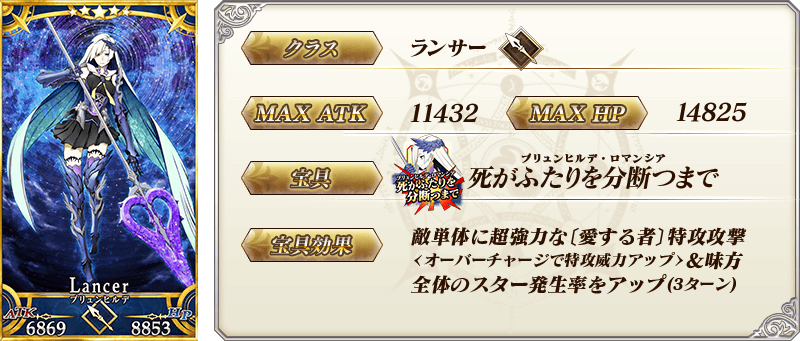 ※上述「★5(SSR)布倫希爾德(Lancer)」的卡面為靈基再臨第1階段。
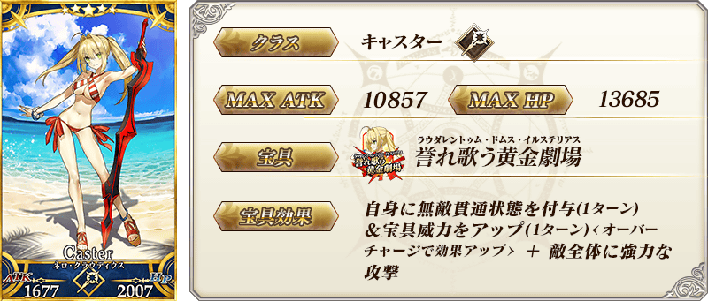
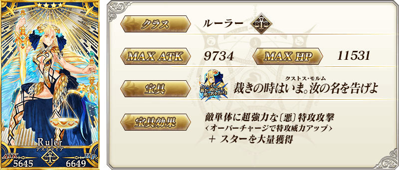 ※上述「★4(SR)阿斯特蕾亞」的卡面為靈基再臨第1階段。
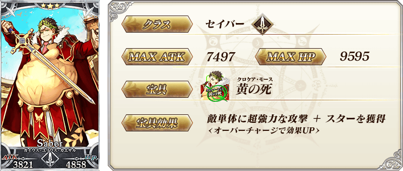 ※上述「★3(R)蓋烏斯・尤利烏斯・凱撒」的卡面為靈基再臨第1階段。
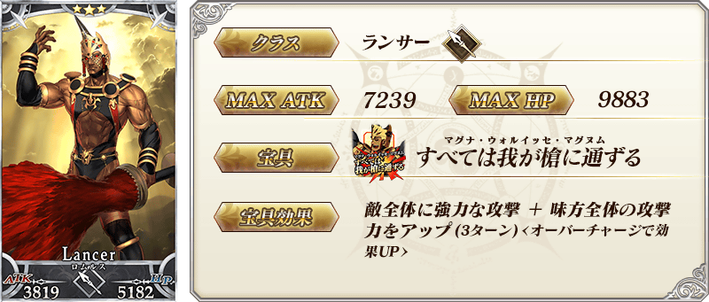 ※上述「★3(R)羅慕路斯」的卡面為靈基再臨第1階段。
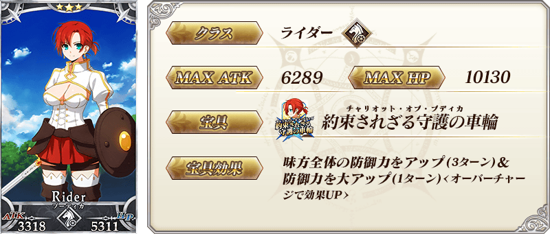 ※上述「★3(R)布狄卡」的卡面為靈基再臨第1階段。
| 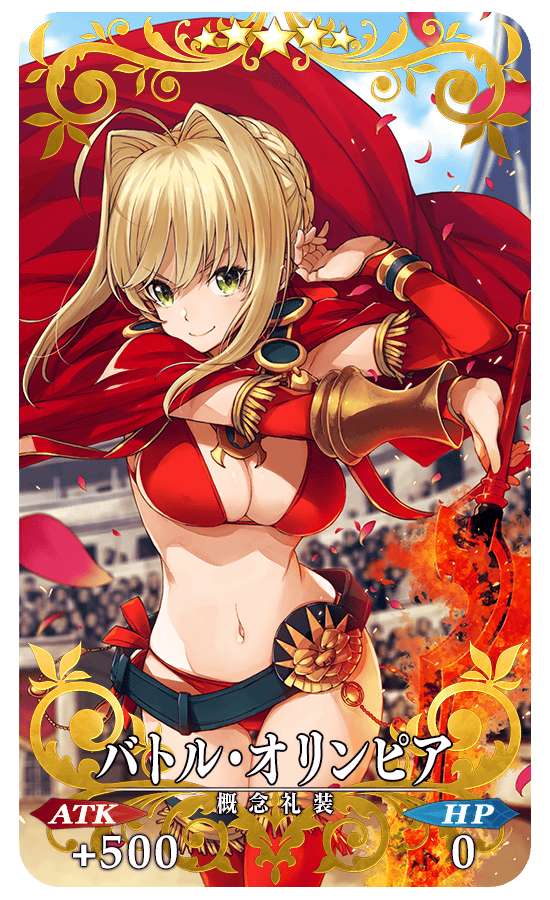 |
★★★★★SSR |
| 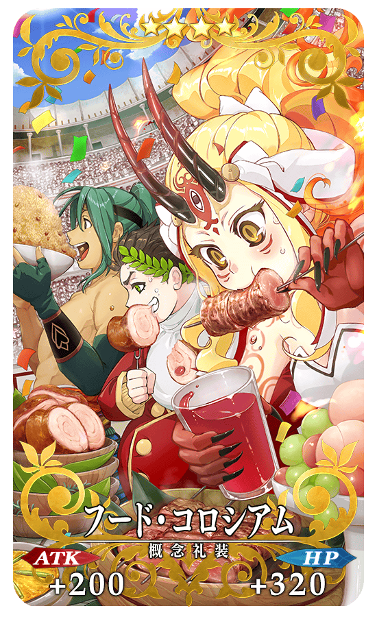 |
★★★★SR |
| 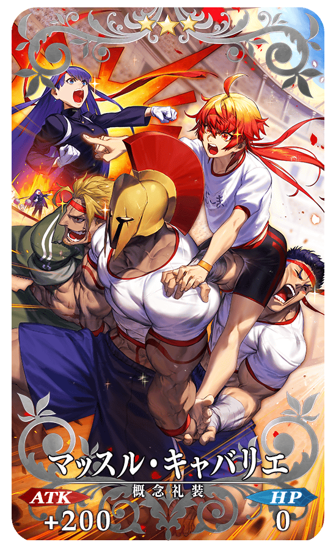 |
★★★R |
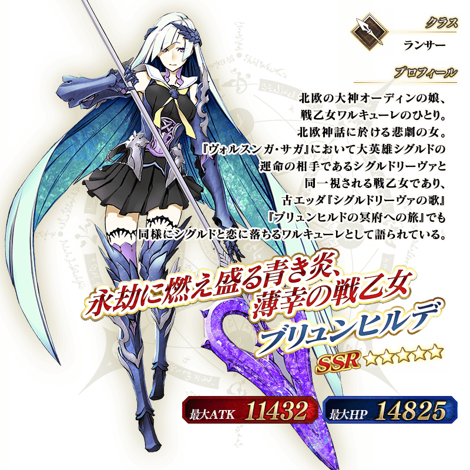 ※上述「★5(SSR)布倫希爾德(Lancer)」的立繪為靈基再臨第1階段。
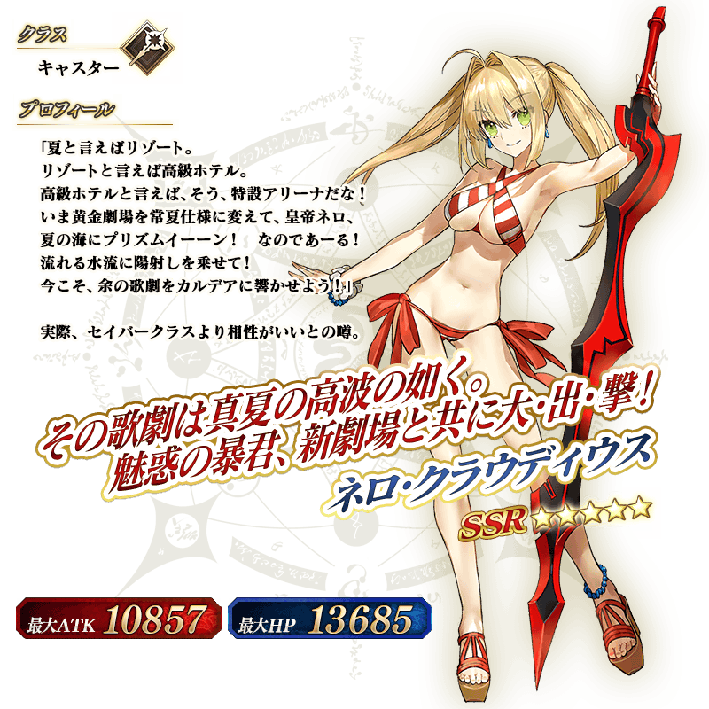
介紹在本召喚Pick Up的3位從者寶具演出！
【★5(SSR)布倫希爾德(Lancer)】
【★5(SSR)尼祿・克勞狄烏斯(Caster)】
【★4(SR)阿斯特蕾亞】
其他還有，期間限定活動「復刻:Grand尼祿祭 ～2021 Early Summer～」同時舉辦！
關於詳情，請自下述橫幅確認。
■「復刻:Grand尼祿祭 ～2021 Early Summer～」詳細情報